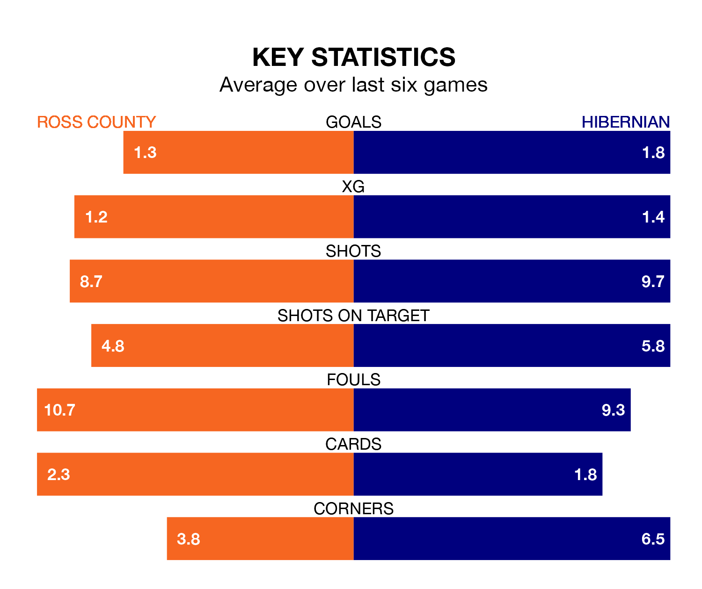

Hibernian are strong favourites to take all three points despite Ross County's home advantage in Saturday's match at the Global Energy Stadium.
*Betting Company* are offering odds of 1.95 on Hibernian sealing the win, with the visitors sitting sixth in the Premiership table.
Ross, who are 11th in the league and 12 points behind Hibs, are priced at 3.3 to win. A draw is set at 3.6.
With 32 goals in 34 games so far this season, Ross are the league's third-lowest scorers with 0.9 goals per game. And they are conceding more than average, letting in 58 goals at a rate of 1.7 per game.
Hibernian, meanwhile, are above average scorers, with 1.4 goals per game, compared to a league average of 1.3. They have conceded 1.5 goals per game.
In the last 10 years, Ross and Hibernian have played each other on 22 occasions. Ross won five of them, Hibernian 10, and they drew seven times.
On average, the Staggies scored 0.9 goals and Hibs 1.4 in those matches.
Their last meeting was on March 13, when they played out a 2-2 draw.
In Simon Murray, County have one of the league's sharpest shooters so far this season. He has notched 11 goals in 33 appearances, to sit seventh in the scoring charts.
His goal rate of one every 237 minutes is slightly quicker than that of Myziane Maolida, Hibs's top scorer with a goal every 149 minutes, and a total of seven goals in 14 games.
The Staggies are in mixed form in the Premiership, with two wins and a draw from their last six games.
With two wins and two draws over that period, the visitors' form is slightly better – they have taken eight points from 18, compared to the home side's seven.
Ross's last match was on April 27, a 2-0 loss against Livingston.
Hibernian beat St. Johnstone 3-1 last time out, also on April 27, with Dylan Vente, Emiliano Marcondes and Paul Hanlon on the scoresheet.
Updated: 12:00 (UTC), 02/05/24